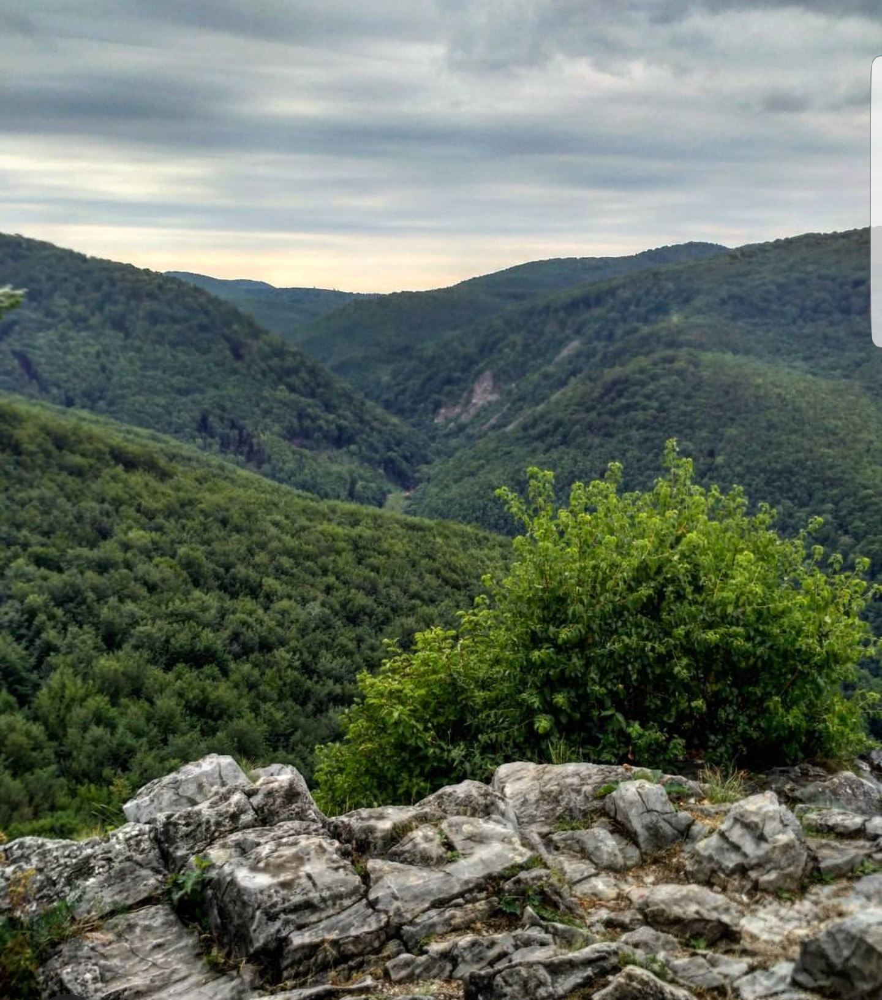
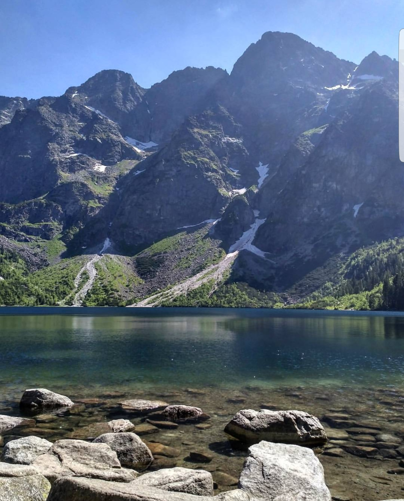
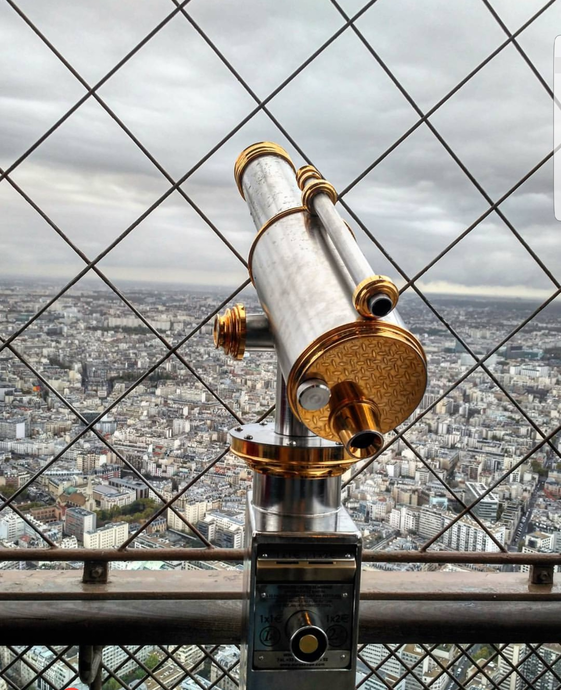
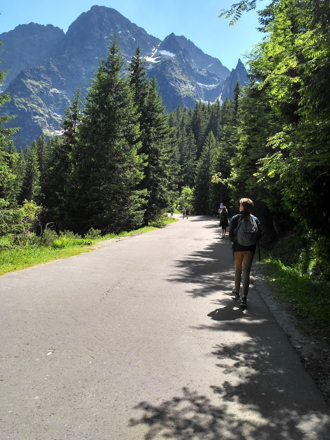
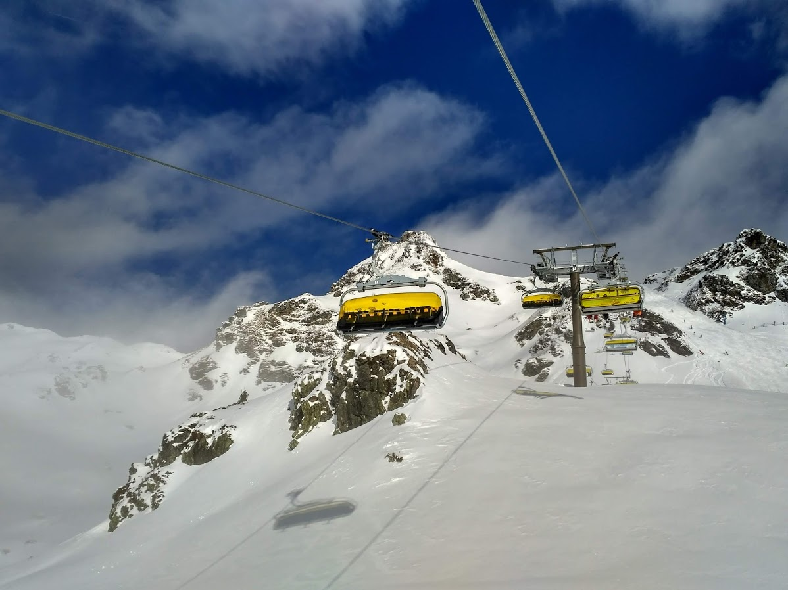

Magamról
A nevem Kovács Boglárka, Budapesten születtem 1999-ben. Tanulmányaimat a Karinthy Frigyes Kéttanításinyelvű Gimnázium után a Budapesti Műszaki és Gazdaságtudományi Egyetemen folytattam, ahol jelenleg elsőves terméktervező hallgató vagyok. A gimnáziumban eltöltött évek alatt sikerült angolból C1-es nyelvvizsgát szereznem. A szabadidőmben szívesen foglalkozom fotózással is, illetve képszerkesztéssel, alább megtekinthető néhány munkám.
    
Elérhetőségeim email: kovacsbogi0@gmail.com